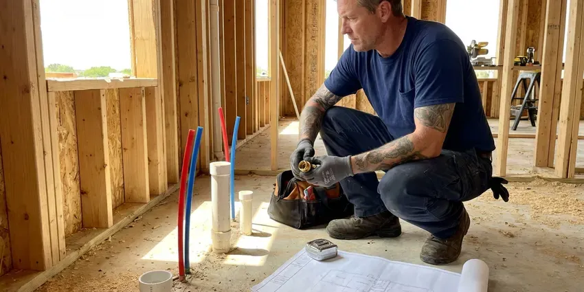

Water Line Repair in Dearborn, MI
Galvanized, copper, poly or PEX, CHV Plumbing repairs the pipe between your meter and your house in Dearborn, MI.
- Workmanship Guarantee
- Licensed Technicians
- Meter-to-House Repiping
- 811 called before we dig

Get Your Water Pressure Back in Dearborn, MI
You get a written price before we touch a shovel.
Repairing Water Lines in Dearborn, MI With One Small Dig
CHV Plumbing repairs the buried pipe that runs from your meter to the house in Dearborn, MI, whether it is copper, galvanized steel, poly or PEX. Most leaks start at a joint. A ground microphone and a line tracer put us on that joint, then dig one pit and repair it with fittings rated for Michigan conditions.
Some of what we do:
- Pressure reducing valve and main shutoff replacement
- Line tracing and depth locating before excavation
- Galvanized-to-copper and galvanized-to-poly replacement

Additional Plumbing Maintenance Services in Dearborn, MI
Our maintenance and specialty plumbing services in Dearborn, MI catch small problems before they become emergencies.


Customers
Why Choose CHV Plumbing for Water Line Repair in Dearborn, MI?
Finding the leak is most of the job. Guessing means digging three holes. We use a ground microphone, a line tracer and sometimes tracer gas to put the hole within a foot or two of the leak, which saves your lawn and a good share of the labor bill.
- Clean Backfill, Soil is compacted in lifts so the patch does not sink after the first rain.
- Written Pricing, You approve the price in writing before anyone opens the ground.
- Stocked Trucks, Fittings for copper, galvanized, poly and PEX are carried on each truck, so most jobs finish in one trip.
Citywide Coverage
From apartments with a shared meter to single-family homes on a corner lot, we work across all of Dearborn and the nearby towns. Shared services need more testing. We isolate each branch to find which line is leaking, before we open any ground.
Experienced Team
The CHV Plumbing crew works to the Michigan plumbing code on every repair. No shortcuts on fittings. They pull permits when a job needs one, so the work is open and ready when the inspector shows up.
Safety-First Approach
We protect the house while we work. Boots off inside. Drop cloths go down by the main shutoff, and any lawn or plants we move get set aside and put back when we finish.
Trusted Certified Dearborn Plumbing Services Professionals
At CHV Plumbing, we are proud to offer certified plumbing services throughout Dearborn, MI. Credentials matter in this trade. Every repair, install and maintenance visit follows strict safety and quality rules, and the plumbers doing the work carry recognized industry credentials.
Call Us Now PHCC Plumbing Contractor Recognition
PHCC Plumbing Contractor Recognition Better Business Bureau (BBB) Accreditation
Better Business Bureau (BBB) Accreditation Angi Certified Pro
Angi Certified Pro ISO 9001 Quality Management Certification
ISO 9001 Quality Management CertificationWater Line Repair We Handle in Dearborn, MI
Commercial Water Line Repair in Dearborn, MI
Commercial service lines are often 1 1/2 to 4 inch pipe feeding a meter bank, a backflow assembly and sometimes a fire line. A break shuts the business down. CHV Plumbing can schedule repairs early in the morning or after closing, with large-diameter couplings and fittings already loaded. We also arrange the backflow test and inspection that most water providers require after work on the commercial side of the meter.

PEX and Copper Water Line Repair in Dearborn
Copper and PEX fail in different places. Copper tends to pinhole where a rock rubs it or where the water chemistry eats the wall from inside. PEX usually fails at a fitting. We cut out the bad section of copper and sweat or press in a new length, and for PEX we use the matching crimp or expansion tool so the joint is made the way the manufacturer intends.
Commercial Water Line Services in Dearborn, MI
Besides repairs, CHV Plumbing handles service line upgrades when a commercial tenant needs more flow, like a restaurant adding a dish line or a second restroom. Bigger meters need bigger pipe. We size the line from the fixture count. Then we coordinate with the water provider on the tap and meter change, set the backflow assembly and get the inspection signed off, so the tenant is not held up waiting on paperwork.
PEX Water Line Repair in Dearborn, MI
PEX itself rarely fails underground, but the joints and the first few feet near the house take a beating. Rats and gophers sometimes chew it. A shovel or a fence post auger can nick it, and sunlight exposure before burial weakens the plastic over time. We cut out the damaged section and install new pipe with crimp, clamp or expansion fittings, matched to the PEX brand already in the ground.
Water Line Repair at the Meter in Dearborn, MI
The meter box is where a lot of leaks start. Fittings in the box loosen with ground movement and traffic. Before we touch anything, we figure out whether the leak is before or after the meter, since the utility is in charge of the meter and the pipe feeding it. When it is on your side, we repair it. That often means new fittings and a new customer shutoff valve on the same visit.
Main Water Line Replacement in Dearborn, MI
Replacement beats repair once a line has leaked two or three times, or when it is galvanized or polybutylene. Patching that kind of pipe tends to buy months, not years. We run new Type K copper or PEX from the meter to the house, usually in one day with a trench or a trenchless pull. We pull the permit, set up the inspection and pressure test the new line before it is covered.
Slab Leak Water Line Repair in Dearborn
A slab leak is a supply pipe leaking under the concrete floor of the house. Newer homes mostly rely on copper or PEX supply lines with plastic drains, which hold up far better against corrosion. Signs include a warm spot on the floor, the sound of running water and a meter that moves with everything off. We pinpoint the leak with acoustic gear and thermal imaging. From there you have three choices: break the slab at the spot, reroute the line through the walls or attic, or skip the old under-slab pipe and repipe overhead with PEX. We price each one for you.

Underground Leak Detection in Dearborn, MI
A ground microphone picks up the hiss of water escaping a pressurized pipe, even through a couple of feet of dirt. Some leaks barely make a sound. For those we push a hydrogen and nitrogen tracer gas into the drained line and sniff for it at the surface, which finds leaks the microphone cannot hear. Freeze and thaw cycles move the soil around buried pipes, which can crack older clay and cast iron sewer laterals. Once the spot is marked, you get a written repair price before we dig.
A Water Line Plumber Near You in Dearborn, MI
Homeowners in Dearborn call us for the same handful of reasons: a wet yard, low pressure, rusty water, a big bill. We hear it every week. Each one starts with a meter test and a walk along the pipe route, and the majority finish with one repaired coupling and one small hole.
Close by matters most at two in the morning. Our phones are answered after hours. A plumber with a curb key and a pump can be on the way to most of Dearborn fast, and once the water is off the rest of the repair can be scheduled for daylight if you prefer.
CHV Plumbing at a Glance
- Licensed and insured plumbers serving Dearborn, MI
- Same-day appointments and 24/7 emergency response
- Clear written estimates, no hidden fees
- 4.9-star rated by 670+ Michigan customers
Dearborn Map
Dearborn Information
- Population
- 105,811
- Area codes
- 313/734/248
- Service area
- Dearborn and towns within a 40 mile drive
- Nearby
- Dearborn Heights, Taylor, Detroit, Westland
Well water across much of the state tends to be harder and often carries iron, which stains sinks and clogs aerators. Scale inside older pipe and movement in the soil work on buried lines year after year in Dearborn, MI, and the first sign is usually a wet spot that never dries.
Expert Services
Reach out to CHV Plumbing for honest, reliable plumbing from people who know the trade in Dearborn, MI.
Our Specialized Plumbing Services in Dearborn, MI
At CHV Plumbing, we handle the full list of plumbing services across Dearborn, MI. We go from leak detection all the way to full system installations, for homes and commercial buildings, and we do it quickly at a fair price. Explore our core services below:


How a Water Line Repair Works in Dearborn, MI
A water line repair in Dearborn, MI follows the same three steps nearly every time: find it, fix it, test it.
Describe the Problem
Phone CHV Plumbing at (810) 380-5918 and tell us what is happening. We will ask if your meter moves with everything off.
Find the Leak
A plumber isolates the house, gauges the pressure and marks the leak with acoustic gear. Then we write up your options.
Fix It Right
Once you approve, the crew repairs or replaces the line with code-approved pipe and fittings. It gets a pressure test before backfill.
Frequently Asked Questions About Water Line Repair in Dearborn
Price depends mostly on depth, access and pipe material. A shallow spot repair is cheap. Most single-leak repairs land between $300 and $800, and a full replacement usually falls between $1,500 and $6,000, sometimes more if the line runs under concrete. You get a written estimate after we locate the leak.
Most jurisdictions in Michigan require a permit for a full service line replacement. Small repairs depend on the city. The permit usually comes from the city or county building department, and an inspector looks at the new pipe, the bedding and the burial depth before backfill. CHV Plumbing handles that paperwork for you.
Green grass in one strip is a big one. Soggy ground in dry weather is another. You may also notice pressure dropping at every fixture, a rising water bill, cloudy water or a hiss near the meter. If you see two or more of these together, it is worth a meter test.
Spot repairs usually take a few hours. A full replacement takes about a day. Jobs with a deep line, a lot of hardscape or a trenchless pull can stretch to two or three days, mostly because of restoration work and inspection timing. We give you a time estimate with the quote.
You can tighten an exposed fitting at a hose bib. The buried line is a different job. They need the leak located, 811 marking, safe digging around the gas and power lines nearby and code-approved fittings made up correctly. A mistake means a bigger leak and the same hole dug twice.
Age is the biggest cause. Galvanized rusts and copper pits. Shifting soil, tree roots, high water pressure and freeze-thaw cycles all add stress, plus accidental hits from fence posts, irrigation trenching and utility work. Poor original installation is another, such as pipe laid on sharp rock.
We work on copper, PEX, HDPE poly, PVC and old galvanized steel. Polybutylene too, when we find it. For new work in Dearborn, Type K copper and burial-rated PEX are our usual picks, with HDPE for pulled lines. The trucks carry transition fittings for every one of them.
Fix small leaks early. Little leaks grow. Check your pressure once a year, because a bad regulator stresses every pipe in the house, and keep big-rooted trees off the pipe route. For older homes in Dearborn, replacing an aging galvanized line on your own schedule usually costs less than an emergency.
What Our Customers Say About Our Plumbing Experts

James P.
Our restaurant had a slow leak at the hand sink that was rotting the cabinet base. CHV Plumbing came in at six in the morning before prep, replaced the trap and both supply lines, and was packed up before my first cook clocked in.
Commercial Plumbing · Livonia, MI
Jessica T.
We were adding a gas range in a kitchen remodel and needed a new line run from the meter. The plumber pulled the permit, ran the pipe through the crawl space, and had it inspected and approved within the week.
Gas Line Repair · Southfield, MI
Carlos V.
Our house still had galvanized pipe, and upstairs the shower was a trickle. The crew repiped everything in PEX over three days and patched every drywall hole before they left. The pressure difference is night and day.
Repiping · Detroit, MIRobert G.
The camera showed a full break in our clay sewer line near the street. CHV Plumbing replaced it with a trenchless pipe burst, so the only digging was two small pits in the yard. They let us watch the footage before and after.
Sewer Line Replacement · Detroit, MI
Mark T.
The floor drain in our office break room backed up every few weeks. The plumber ran a cable, then put a camera down and found roots at a joint about thirty feet out. Seeing it on the screen made the decision easy.
Drain Cleaning · Westland, MIPaul B.
Our pit pump ran nonstop even in dry weather. The plumber found the check valve was stuck open, so the same water kept cycling back into the pit. New valve, new float switch, done in an hour. It runs quiet now.
Sump Pump · Dearborn, MI